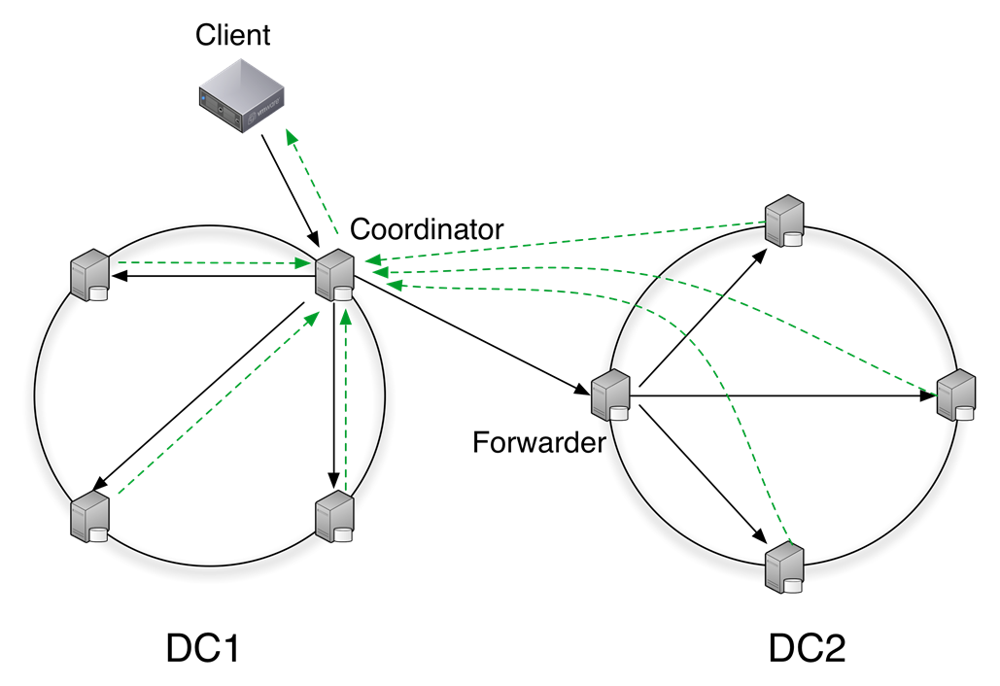
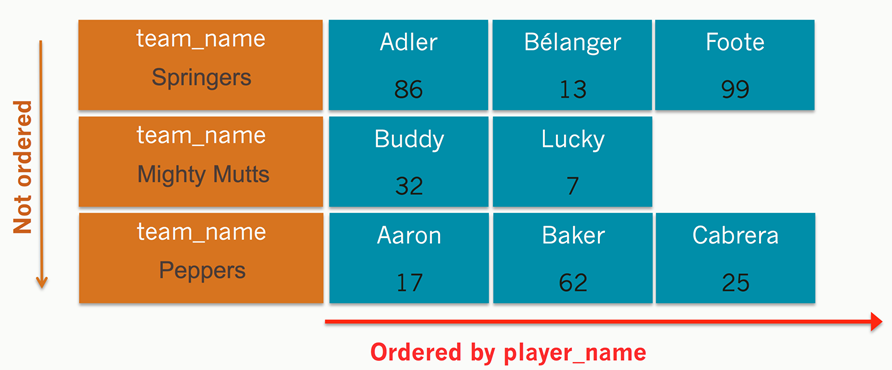
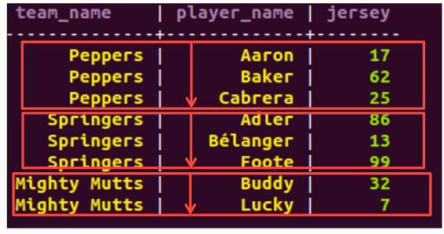

C* 101
Cassandra and Modeling Basics
SELECT * FROM presenters WHERE name IN ('Christopher Reedijk', 'Gary Stewart');
name | title | company | area | twitter
---------------------+--------------+---------+------+-----------
Christopher Reedijk | Dev Engineer | ING | NL | @creedijk
Gary Stewart | Dev Engineer | ING | NL | @Gaz_GandA

ING Nederland (@ingnl)
This presentation is based on a 101 presentation by
Hayato Shimizu (@hayato_shimizu)
Short introduction
 |
 |
| Christopher Reedijk | Gary Stewart |
|
|
Apache Cassandra
Created by Avinash Lakshman and Prashant Malik at Facebook
| Cassandra is | Cassandra is not | |
|---|---|---|
|
|
DataStax and Cassandra

Founded in 2010 by Jonathan Ellis and Matt Pfeil
80% Apache Cassandra code contribution
Offer commercial support for DataStax Enterprise version of Cassandra
DataStax Enterprise integrates Search and Analytics
Head Quarter in San Francisco Bay area
EMEA office opened in March 2013
Cassandra Basics
Network Topology Awareness
|  | |
Writes
|
Reads
|
Cassandra Replication Strategy
|
Token Range 0 -> 2127-1 in Ring Formation Consistent Hashing Algorithm Replica nodes in clockwise Gossip protocol between nodes |
RF = 3 |
No Single Point of Failure
|
Write Path

Read Path
Logical Grouping

Replication Factor and Data Consistency In a Distributed System
CAP – Consistency, Availability, Partition Tolerance
Consistency is achieved with W + R > RF
Quorum = (Integer) RF / 2 + 1

CQL3
Why CQL3?
Excellent language for modeling data structures
Usability
Readability
Familiarity
Programming language agnostic
Apache Thrift, Hector, Astyanax days
Column col = new Column(ByteBuffer.wrap("product".getBytes())));
col.setValue(ByteBuffer.wrap("phone".getBytes());
col.setTimestamp(System.currentTimeMillis());
ColumnOrSuperColumn c = new ColumnOrSuperColumn();
c.setColumn(col);
Mutation m = new Mutation();
m.setColumn_or_supercolumn(c);
List
|

|
CQL3
INSERT INTO products (product_id, product) VALUES (“id12321”, “phone”);

CQL Basics – creating a table
CREATE TABLE cities (
city_name varchar,
elevation int,
population int,
latitude float,
longitude float,
PRIMARY KEY (city_name)
);
|
We can visualize it this way: city_name is the partition key In this example, the partition key = primary key |
CQL Basics – Composite
Primary Key
The Primary Key
- The key uniquely identifies a row
- A composite primary key consists of:
- A partition key
- One or more clustering columns
e.g. PRIMARY KEY (partition key, cluster columns, ...) - The partition key determines on which node the partition resides
- Data is ordered in cluster column order within the partition
CQL Basics – Composite
Primary Key
CREATE TABLE sporty_league ( team_name varchar, player_name varchar, jersey int, PRIMARY KEY (team_name, player_name) ); |
 |
CQL Basics – Simple Select
SELECT * FROM sporty_league;
|  |
More than a few rows can be slow. (Limited to 10,000 rows by default)
Use LIMIT keyword to choose fewer or more rows
CQL Basics - Simple Select on Partition Key and Cluster Columns
SELECT * FROM sporty_league WHERE team_name = 'Mighty Mutts';

SELECT * FROM sporty_league WHERE team_name = 'Mighty Mutts' and player_name = 'Lucky';

CQL Basics – Insert/Update
INSERT INTO sporty_league (team_name, player_name, jersey)
VALUES ('Mighty Mutts','Felix',90);
CQL Basics - Ordering
SELECT * FROM sporty_league WHERE team_name = 'Mighty Mutts' ORDER BY player_name DESC; |
Partition keys are not ordered, but the cluster columns are You can only order by a column if it's a cluster column Data will by default be in the order of the clustering column(s) You can also use the ORDER BY keyword – but only on the clustering column(s)! |
CQL Basics – Composite
Partition Key
CREATE TABLE cities ( city_name varchar, state varchar, elevation float, latitude float, longitude float population float, PRIMARY KEY ((city_name,state)) ); |
Each city gets it own partition! |
CQL Basics – Performance
considerations
The best queries are in a single partition.
i.e. WHERE partition key = <something>Queries that span multiple partitions are s-l-o-w
Queries that span multiple cluster columns are fast
CQL Basics - Tracing
You can turn on tracing on or off for queries with the TRACING ON | OFF command
This can help you understand what Cassandra is doing and identify any performance problems

CQL Basics - Time to Live (TTL)
INSERT INTO users (id, first, last)
VALUES ('abc123', 'abe', 'lincoln')
USING TTL 3600; // Expires data in one hour
CQL Basics – Data Types

CQL Basics – Composite
Partition Key
CQL supports having columns that contain collections of data
The collection types include: CREATE TABLE collections_example (
Set, List and Map id int PRIMARY KEY,
set_example set<text>,
(64K max limitation) list_example list<text>,
map_example map<int, text>
);
These data types are intended to support the type of 1-to-many relationships that can be modeled in a relational DB e.g. a user has many email addresses
Some performance considerations around collections
- Often more efficient to denormalise further rather than use collections if intending to store lots of data.
- Favour sets over list – lists not very performant
CQL Basics - Lightweight Transactions
Introduced in Cassandra 2.0
Example:
INSERT INTO customer_account (customerID, customer_email)
VALUES ('LauraS', 'lauras@gmail.com')
IF NOT EXISTS;
UPDATE customer_account SET customer_email='laurass@gmail.com'
IF customer_email='lauras@gmail.com';
Great for 1% of your application – but not recommended to be used too much!
Data Modeling
Time Series
CREATE TABLE sensor_data ( sensor_id int, date varchar, time timeuuid, value int, PRIMARY KEY( (sensor_id, date), time ) ) WITH CLUSTERING ORDER BY (time DESC); |
INSERT INTO sensor_data (sensor_id, date, time, value) VALUES ( 1, '20130908', 1883-11e3-8ffd-0800200c9a66, 432) USING TTL 604800; |
SELECT time, value, TTL (value) FROM sensor_data
WHERE sensor_id = 1 AND date = '20130908'
AND time > maxTimeuuid('2013-09-08 10:05+0000')
AND time < minTimeuuid('2013-09-08 15:00+0000');
|
|
time | value | ttl(value) -----------------------------+-------+------------ 1883-11e3-8ffd-0800200c9a66 | 432 | 604257 1887-11e3-8ffd-0800200c9a66 | 433 | 604452 |
|
De-normalize
| Don't do this | Do this instead | |
|---|---|---|
CREATE TABLE users ( id uuid PRIMARY KEY, username text, email text, street_address text, town text, ); CREATE INDEX user_street ON users (street_address); CREATE INDEX user_town ON users (town); SELECT * FROM users WHERE town = 'Stockholm' AND street_address = 'Sankt Eriksgatan' ALLOW FILTERING; |
CREATE TABLE users ( id uuid PRIMARY KEY, username text, email text, street_address text, town text, ); CREATE TABLE user_street ( town text, street text, user_id uuid, PRIMARY KEY ((town, street), user_id) ); |
Native Protocol / DataStax Drivers
CQL3 Only
Fully asynchronous protocol, using Netty
Server notifications
Optional compression
Java, C#, and Python so far, more will be added
Many policies, including TokenAwarePolicy, DowngradeConsistencyRetryPolicy, LoadBalancingPolicy, DCAwareRoundRobinPolicy etc
Maven:
<dependency>
<groupId>com.datastax.cassandra</groupId>
<artifactId>cassandra-driver-core</artifactId>
<version>2.0.1</version>
</dependency>
Cassandra Meetup
You're Invited:http://www.meetup.com/Netherlands-Cassandra-Users/events/168625032/
First meetup held at 26-02-2014
Next meetup scheduled for 02-04-2014
Speakers: Patrick McFadin (Datastax) and Gary Stewart (ING)
Thank you
...graceful bowContact
christopher.reedijk@ing.nl
gary.stewart@ing.nl